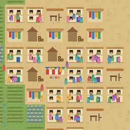
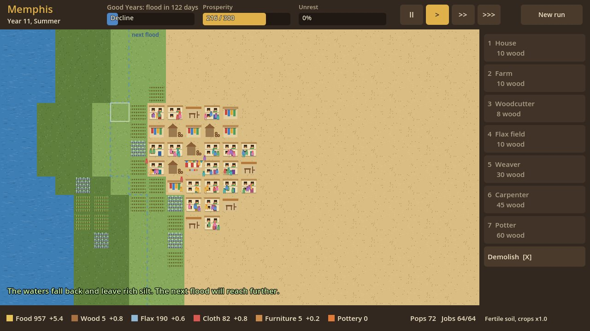

Homes that tell you how they feel
Houses grow as their needs are met. When a good they rely on runs out, they visibly fade, stir up unrest and eventually drop a tier. You can read the town's health by looking at it.

Pocket Realm AlphaA cozy roguelite city builder. Feed your people, clothe them, fill their homes with furniture and pottery, and race to a golden age before history catches up with you.

How it plays
Every run is one city at one moment in history. Win by reaching its golden age; lose if your people give up on you first.
What makes it tick
Short runs, readable systems, and a town that shows you how it's doing.
Houses grow as their needs are met. When a good they rely on runs out, they visibly fade, stir up unrest and eventually drop a tier. You can read the town's health by looking at it.
Six resources and two-step chains: flax becomes cloth, wood becomes furniture. Enough to plan around, never a spreadsheet.
New buildings open up as the town moves through its needs tiers, so each run starts simple and gets more interesting as it goes.
Extra cloth, furniture and pottery turn into flower boxes, lanterns and banners on their own. A thriving city looks like one.
The calendar swings between them, and every cycle pushes harder than the last. The Decline meter shows you exactly when the next hard stretch arrives.
Want to just build? Cozy mode never ends the run. Unrest only slows growth, so you can take your time.
Needs tiers
Four tiers, each built on the goods of the last.
The first city
The Nile floods every cycle and reaches a little further each time. Flooded buildings stop working and needs rise while the water is up. When it falls back it leaves silt behind, and crops on that ground grow half again as fast.
So the river is both the threat and the reason to build near it. A dashed line on the map shows where the next flood will reach.
Roadmap
One city is playable today. The plan from here:
It's the working title. If it changes, this page will too.
The first public build will be a free Memphis demo on itch.io. Email me and I'll tell you when it's up.
It's built in Godot, and the plan is Windows, macOS and Linux. A version you can play in the browser on itch.io is also planned.
Around 15 minutes at normal speed for a winning Memphis run in the current alpha. Longer if you stop to admire your townhouses, and as long as you want in endless mode.
On itch.io first, then Steam. Purchases and refunds go through those stores.
One email when the itch.io demo goes live, and one when the Steam page opens. That's it.